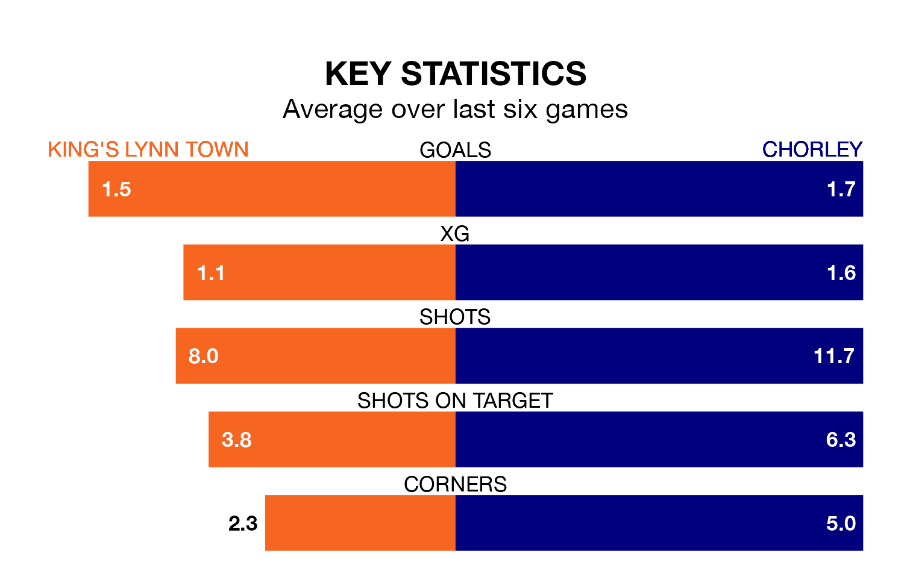

Chorley travel to the Walks for Tuesday's late match against King's Lynn Town looking to bounce back from defeat last time out in the National League North.
The Magpies, who sit fourth in the league after 43 games, fell to a 3-1 away defeat to Buxton on Saturday.
They face a King's Lynn side who secured a draw in their last match, a 1-1 tie with Banbury United, and who sit 16th in the table.
With 75 goals in 43 games so far this season, Chorley are the league's second-highest scorers with 1.7 goals per game. And they are conceding fewer than average, letting in 48 goals at a rate of 1.1 per game.
King's Lynn, meanwhile, are below average scorers, with 1.2 goals per game, compared to a league average of 1.3. They have conceded 1.4 goals per game.
In the last three years, King's Lynn and Chorley have played each other on three occasions. King's Lynn won two of them and Chorley one.
Their last meeting was on August 26, when Chorley won 3-1 at home.
Town are in mixed form in the National League North, with two wins and three draws from their last six games.
With three wins and three losses over that period, the Magpies' form is similar – they have both taken nine points from 18.
Updated: 14:47 (UTC), 09/04/24